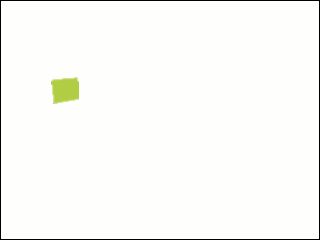
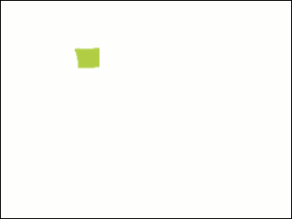
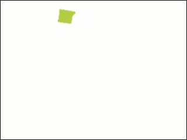
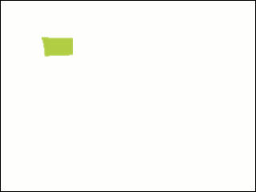
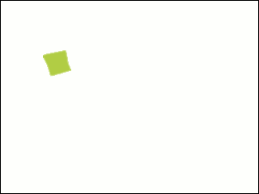
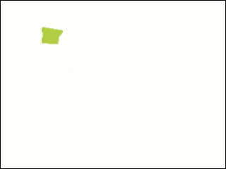
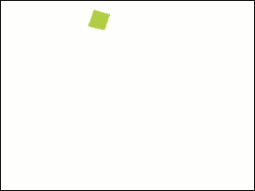
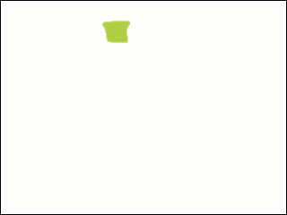
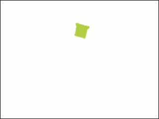

Hiragana
Let's start with simple Hiragana
Basic-hiragana
Please click the characters to see how they are written and pronounced
|
あ
a 
|
か
ka  |
さ
sa 
|
た
ta 
|
な
na 
|
は
ha 
|
ま
ma 
|
や
ya 
|
ら
ra 
|
わ
wa 
|
・
・ |
|
い
i 
|
き
ki  |
し
shi 
|
ち
chi 
|
に
ni 
|
ひ
hi 
|
み
mi 
|
・
・ |
り
ri  |
・
・ |
・
・ |
|
う
u 
|
く
ku 
|
す
su  |
つ
tsu  |
ぬ
nu 
|
ふ
fu 
|
む
mu 
|
ゆ
yu  |
る
ru 
|
・
・ |
・
・ |
|
え
e  |
け
ke |
せ
se 
|
て
te 
|
ね
ne 
|
へ
he 
|
め
me 
|
・
・ |
れ
re 
|
・
・ |
・
・ |
|
お
o 
|
こ
ko 
|
そ
so 
|
と
to  |
の
no  |
ほ
ho 
|
も
mo 
|
よ
yo 
|
ろ
ro 
|
を
wo 
|
ん
n 
|
Hiragana is the main alphabet for Japanese. There are 5 vowels in Japanese: a, i, u, e, o. All Hiragana characters end with one of these vowels, with the exception of "n". You can see that there no "tones" in Japanese like in many other Asian languages. All the characters's pronounciations sounds similar to English, except "r", which is a mixed of "L" and "R" in English.
Japanese words are the combinations of characters. For example, いちご means strawberry in English. There are also words with only one character too. For expample, は means tooth.
Hiragana with Diacritical Marks
|
が
ga |
ざ
za |
だ
da |
ば
ba |
ぱ
pa |
|
ぎ
gi |
じ
ji |
ぢ
di |
び
bi |
ぴ
i |
|
ぐ
gu |
ず
zu |
づ
du |
ぶ
bu |
ぷ
pu |
|
げ
ge |
ぜ
ze |
で
de |
べ
be |
ぺ
pe |
|
ご
go |
ぞ
zo |
ど
do |
ぼ bo |
ぽ
po |
You can create additional sounds by adding diacritical marks. For example, by adding ["] to か, we have the character が, by adding ["] to て, we have the character で.
Remember that with the column [h]: は、ひ、ふ、へ、ほ, while adding ["] make the sounds change to [b], we can make [p] sounds by adding a small cirlce [o].
Hiragana with small や、ゆ、よ
Finally, we can combine characters from the [i] lines except the character [i] (き、し、ち、...) with や、ゆ or よ.
|
きゃ
kya |
しゃ
sha |
ちゃ
cha |
にゃ
nya |
ひゃ
hya |
みゃ
mya |
りゃ
rya |
ぎゃ
gya |
じゃ
ja |
びゃ
ya |
ぴゃ
pya |
|
きゅ
kyu |
しゅ
shu |
ちゅ
chu |
にゅ
nyu |
ひゅ
hyu |
みゅ
yu |
りゅ
ryu |
ぎゅ
gyu |
じゅ
ju |
びゅ
byu |
ぴゅ
yu |
|
きょ
kyo |
しょ
sho |
ちょ
ho |
にょ
nyo |
ひょ hyo |
みょ
myo |
りょ
ryo |
ぎょ
gyo |
じょ
jo |
びょ
byo |
ぴょ
pyo |
❮ ❯